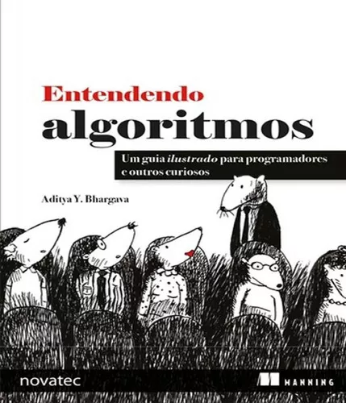

Sobre mim
Eu sou a Carol. Minha característica mais marcante é ambicionar sempre ser uma profissional melhor e uma pessoa mais culta. Gosto muito de desafios, de acompanhar as inovações tecnológicas e de trocar conhecimento com outras pessoas. Não me limito ao back ou ao front-end e considero flexibilidade meu melhor atributo pois entendo a necessidade de adaptação para trabalho em equipe, principalmente quando se trata de diferentes linguagens de programação.
Extensões Universitárias
Análise de Dados em Python
Empreender: Desafios e oportunidades
IOT e Programação de Sensores
Bibliografia
